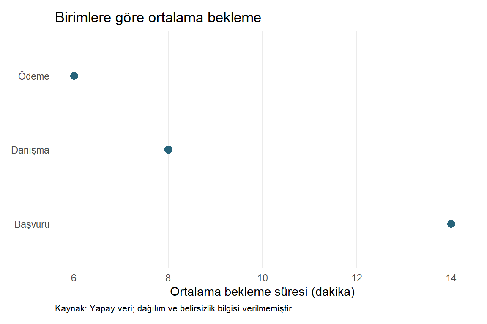

library(ggplot2)
bekleme <- data.frame(
birim = c("Danışma", "Başvuru", "Ödeme"),
dakika = c(8, 14, 6)
)
p_son <- ggplot(bekleme, aes(x = dakika, y = birim)) +
geom_point(size = 3, colour = "#27647B") +
labs(title = "Birimlere göre ortalama bekleme",
x = "Ortalama bekleme süresi (dakika)", y = NULL,
caption = "Kaynak: Yapay veri; dağılım ve belirsizlik bilgisi verilmemiştir.") +
theme_minimal(base_size = 11) +
theme(
panel.grid.minor = element_blank(),
panel.grid.major.y = element_blank(),
plot.caption = element_text(hjust = 0, size = 8),
plot.background = element_rect(fill = "white", colour = NA),
plot.margin = margin(10, 15, 10, 10)
)28 Grafiklerin Dışa Aktarılması
Bir grafik ekranda doğru göründüğü halde dosyaya kaydedildiğinde yazıları küçülebilir, uzun etiketleri kesilebilir veya arka planı değişebilir. Grafik üretimi, nesneyi oluşturmakla bitmez: çıktı dosyasının kullanım amacına uygun olduğunu da doğrulamalıyız.
Bu bölümde grafik nesnesi, dosya biçimi, fiziksel boyut ve çözünürlük kararlarını ayıracağız. Yeniden üretilebilirlik için yalnızca resmi değil, onu üreten kodu ve veri bağlamını da koruyacağız (Wilke 2019, böl. 27).
28.1 Öğrenme Hedefleri ve Ön Koşullar
Bu bölümün sonunda ggsave() ile belirli bir grafiği açık boyutlarla kaydedebilecek; raster ve vektör biçimlerini seçebilecek; DPI–piksel–fiziksel boyut ilişkisini hesaplayabilecek; Türkçe karakterleri, arka planı ve çıktı dosyalarını kontrol edebileceksiniz. Grafik nesneleri, temalar ve temel dosya yolları ön koşuldur.
28.2 Dosyadan Önce Grafik Nesnesi
Örnekler bağımsız çalışsın diye küçük bir yapay özet grafiğini burada yeniden oluşturacağız. Her satır bir hizmet biriminin ortalama bekleme süresidir; bu sayılar gerçek bir kurumdan alınmamıştır.
p_son dosya değil, grafik nesnesidir. Başka bir dosya biçimine kaydetmek için veriyi yeniden yazmamız gerekmez. Ancak son boyutu değiştirdiğimizde tema ve yazı düzenini yeniden gözden geçirmemiz gerekebilir.
p_son
28.3 ggsave() Nasıl Çalışır?
ggsave() grafik nesnesini seçilen grafik cihazıyla dosyaya yazar. Dosya uzantısı çoğu zaman biçimi seçmeye yeterlidir. Bununla birlikte kayıt işlemini açıkça tanımlamak, oturumda en son hangi grafiğin gösterildiğine bağımlılığı azaltır (ggplot2, t.y.).
| Argüman | Görevi | Örnekteki karar |
|---|---|---|
filename |
Dosya adı | "bekleme_300dpi.png" |
plot |
Kaydedilecek grafik nesnesi | p_son açıkça verilir. |
path |
Hedef klasör | Proje içindeki çıktı klasörü |
width, height |
Çıktının boyutları | 6 × 4 |
units |
Boyut birimi | "in"; alternatif "cm", "mm", "px" |
dpi |
Raster çözünürlüğü | 300 piksel/inç |
device |
Yazacak cihaz | Gerekirse açıkça R cihazı verilir. |
bg |
Arka plan | "white" |
limitsize |
Yanlışlıkla çok büyük boyutları önleyen kontrol | Varsayılan TRUE korunur. |
Varsayılan plot, son gösterilen grafiktir. Bu kolaylık etkileşimli kullanımda işe yarasa da üretim kodunda yanlış nesnenin kaydedilmesine yol açabilir. Her kayıtta plot = p_son yazacağız. ggsave() aynı adlı dosyanın üzerine yazabildiği için hedef klasör ve dosya adları bilinçli seçilmelidir.
28.4 PNG: Ekran ve Rapor İçin Raster Çıktı
Raster dosyalar bir piksel ızgarasıdır. Nokta ve yazılar bu ızgarada temsil edilir; dosyayı çok büyüttüğümüzde pikselleşme görülebilir. PNG kayıpsız sıkıştırma kullanır ve grafikler için yaygın bir seçimdir.
# Kitapta yürütme dizini proje köküdür; çalışma kaynaklarını değiştirmiyoruz.
cikti_dizini <- file.path("outputs", "part4", "exporting_graphics")
dir.create(cikti_dizini, recursive = TRUE, showWarnings = FALSE)
png_yolu <- file.path(cikti_dizini, "bekleme_300dpi.png")
png_turu <- if (capabilities("cairo")) "cairo" else "windows"
ggsave(
filename = png_yolu, plot = p_son,
device = grDevices::png, type = png_turu,
width = 6, height = 4, units = "in", dpi = 300,
bg = "white"
)Bu örnek Windows çalışma ortamında Cairo varsa onu, yoksa Windows PNG cihazını seçer. Başka bir işletim sisteminde uygun cihaz türü ayrıca belirlenmelidir. device işlevini açıkça verdiğimiz için mevcut R cihazını kullanıyoruz; ek grafik paketi kurulumu yapılmaz. R PNG belgesi platforma göre cihaz seçeneklerini açıklar.
Dosya boyutları piksel olarak şöyledir:
genislik_piksel <- 6 * 300
yukseklik_piksel <- 4 * 300
c(genislik = genislik_piksel, yukseklik = yukseklik_piksel) genislik yukseklik
1800 1200 Sonuç 1.800 × 1.200 pikseldir. Santimetre kullanıldığında önce 2,54’e bölerek inçe dönüştürürüz. Örneğin 15,24 cm genişlik, 6 inçtir.
28.4.1 Daha Yüksek DPI Her Sorunu Çözmez
6 × 4 inçlik grafikte 11 punto yazı, aynı fiziksel boyutta 150 veya 300 DPI ile kaydedildiğinde yine 11 puntodur; yüksek DPI daha çok piksel sağlar. Fakat dosyayı bir belgede yarı fiziksel boyuta küçültürsek yazılar da küçülür. Bu nedenle önce hedef boyut, sonra okunabilir yazı ve uygun çözünürlük seçilmelidir.
Yayıncının örneğin 300 veya 600 DPI istemesi hedef ortama ait bir koşuldur; bütün grafikler için evrensel bir sayı değildir. Web’de CSS ile gösterilen genişlik, dosyanın piksel boyutundan farklı olabilir.
28.5 PDF ve SVG: Vektör Çıktı
Vektör biçimleri çizgi, nokta ve metni geometrik komutlarla saklayabilir. Bu öğeler büyütüldüğünde raster piksel ızgarasına aynı biçimde bağlı değildir. Çok sayıda nokta veya gömülü raster görseller içeren bir vektör dosyası ise büyük olabilir; her içeriği sınırsız ayrıntılı hale getirmez.
PDF sayfa tabanlı rapor ve yayın akışlarında, SVG web ve vektör düzenleme araçlarında yararlı olabilir. Cihaz desteği ve yazı tipleri son çıktıda kontrol edilmelidir.
vektor_yollari <- character()
if (capabilities("cairo")) {
pdf_yolu <- file.path(cikti_dizini, "bekleme.pdf")
svg_yolu <- file.path(cikti_dizini, "bekleme.svg")
ggsave(pdf_yolu, plot = p_son, device = grDevices::cairo_pdf,
width = 6, height = 4, units = "in", bg = "white")
ggsave(svg_yolu, plot = p_son, device = grDevices::svg,
width = 6, height = 4, units = "in", bg = "white")
vektor_yollari <- c(pdf_yolu, svg_yolu)
} else {
message("Cairo desteği bulunmadığı için PDF/SVG örnekleri üretilmedi; PNG kontrol edilebilir.")
}capabilities("cairo") gerekli desteği sorgular; yoksa bu örnekte kurulum yapmadan açık bir mesaj verilir. cairo_pdf Unicode ve yazı işleme açısından yararlı bir cihazdır; yine de her yazı ailesinin her makinede aynı sonucu vereceği varsayılmamalıdır. Temel pdf() cihazının yazı kodlaması ve gömme davranışı farklıdır. R PDF belgesi bu ayrıntıları tartışır.
Vektör grafiklerde dpi noktaların ve çizgilerin çözünürlüğünü belirleyen temel ayar değildir. Gömülü raster içerik veya cihazın bazı etkileri rasterleştirmesi ayrı değerlendirilir.
28.6 Hangi Dosya Biçimi Ne Zaman?
| Biçim | Uygun kullanım | Kontrol edilecek nokta |
|---|---|---|
| PNG | Ekran, sunum, genel rapor | Piksel boyutu ve son gösterim genişliği |
| Sayfa tabanlı yayın ve baskı akışı | Yazı tipi, sayfa boyutu, yayıncı gereksinimleri | |
| SVG | Web ve vektör düzenleme | Hedef yazılımda yazı ve efekt uyumu |
| TIFF | İstendiğinde raster yayın teslimi | Çözünürlük, sıkıştırma ve dosya büyüklüğü |
| JPEG | Fotoğraf gibi sürekli tonlu görüntüler | Kayıplı sıkıştırma küçük yazı ve çizgileri bozabilir. |
TIFF gerekiyorsa kayıpsız sıkıştırma seçilebilir:
tiff_yolu <- file.path(cikti_dizini, "bekleme_300dpi.tiff")
ggsave(tiff_yolu, plot = p_son, device = grDevices::tiff,
width = 6, height = 4, units = "in", dpi = 300,
compression = "lzw", bg = "white")Burada compression, ggsave() içindeki ... aracılığıyla TIFF cihazına iletilir. Daha büyük dosya veya daha yüksek DPI, daha doğru bir istatistiksel yorum anlamına gelmez.
28.7 Dosyanın Oluştuğunu Doğrulamak
grafik_yollari <- c(png_yolu, vektor_yollari, tiff_yolu)
dosya_bilgisi <- file.info(grafik_yollari)
data.frame(
dosya = basename(grafik_yollari),
var = file.exists(grafik_yollari),
boyut_bayt = dosya_bilgisi$size
)stopifnot(all(file.exists(grafik_yollari)), all(dosya_bilgisi$size > 0))file.exists() ve dosya boyutu, kayıt işleminin temel kontrolüdür. Dosyanın oluşması, görselin doğru olduğunu kanıtlamaz. Dosyayı hedef yazılımla açarak ayrıca şunlara bakmalıyız:
ş,ğ,ı,İ,ö,ü,çkarakterleri doğru mu?- Başlık, eksen ve kaynak açıklaması kesilmiş mi?
- Yazılar son boyutta okunuyor mu?
- Beyaz veya saydam arka plan amaçlandığı gibi mi?
- Renkler gri tonlamada veya farklı arka planda anlamını koruyor mu?
- Dosya gerçekten beklenen grafiği ve kapsamı mı içeriyor?
Bu kontroller ekran görüntüsü almakla yerine getirilmez. Grafik koddan doğrudan dışa aktarılmalı; son dosya ayrıca incelenmelidir.
28.8 Yeniden Üretilebilirliği Korumak
Bir görsel dosyası, hangi süzme işlemlerinin veya paket sürümlerinin kullanıldığını tek başına anlatmaz. Kaynak .qmd dosyasını, verinin kaynağını ve sürüm bağlamını koruyalım. Grafik nesnesini de RDS olarak saklayabiliriz; ancak bu, kodun ve paket bilgisinin yerine geçmez.
saveRDS(p_son, file.path(cikti_dizini, "bekleme_grafik.rds"))
write.csv(bekleme, file.path(cikti_dizini, "bekleme_yapay_veri.csv"),
row.names = FALSE, fileEncoding = "UTF-8")
writeLines(capture.output(sessionInfo()),
file.path(cikti_dizini, "oturum_bilgisi.txt"), useBytes = TRUE)
yeniden_okunan <- readRDS(file.path(cikti_dizini, "bekleme_grafik.rds"))
inherits(yeniden_okunan, "ggplot")[1] TRUERDS nesnesi yeniden çizilirken uyumlu R ve paket sürümleri gerekebilir. Dosya adı ve dizin düzeni de yeniden üretilebilirliğin parçasıdır. Kaynak veriyi veya başka bir çalışmanın çıktısını aynı adla ezmemek için görevle ilişkili bir klasör kullandık. Bu proje için üretilen dosyalar outputs/part4/ altında tutulur; bölüm kodu ve veri altyapısı kaynak olarak korunur.
28.8.1 Quarto Şekli ile Bağımsız Dosya Aynı Teslimat Değildir
Quarto’daki fig-width ve fig-height, yürütülen kod bloğunun şekil cihazı boyutlarını belirler. HTML içindeki gösterim genişliği ayrıca düzenlenebilir. ggsave() ise bağımsız bir dosya kaydeder ve kendisine verilen boyutları kullanır.
Bu yüzden kitapta iyi görünen bir şeklin dergiye veya slayta aynı ölçülerle uygun olacağını varsaymayalım. Son hedefin boyutunu ve çıktı biçimini ayrı tanımlayalım. Raster dosyayı sonradan büyütmek, kayıp ayrıntıyı geri getirmez.
28.9 Sık Yapılan Hatalar
plotvermeyip son gösterilen yanlış grafiği kaydetmek.- İnç ile pikseli karıştırıp çok büyük boyut istemek;
limitsize = FALSEile uyarıyı düşünmeden aşmak. dpiartınca küçük yazının fiziksel olarak büyüyeceğini sanmak.- Türkçe karakter ve yazı tiplerini yalnızca RStudio önizlemesinde kontrol etmek.
- Saydam arka planı hedef zeminde incelememek.
- PNG dosyasını yeniden adlandırarak SVG’ye dönüştüğünü sanmak; biçim, dosyanın yazıldığı cihazla belirlenir.
- Yalnızca resmi saklayıp kaynak kod ve veri kapsamını kaybetmek.
28.10 Egzersizler
- Kolay: Raster ve vektör grafiği birer cümleyle ayırın.
- Kolay: 8 × 5 inç ve 150 DPI çıktının piksel boyutlarını hesaplayın.
- Orta:
p_sonnesnesini 15,24 × 10,16 cm, 300 DPI olarak farklı bir PNG adına kaydedin. İlk PNG ile piksel boyutları aynı olur mu? - Orta: Son gösterilen nesneye güvenmek yerine
plot = p_sonvermek neden önemlidir? - Zor: Yazıları okunmayan bir grafiğin DPI’ını 300’den 600’e çıkarmak neden tek başına çözüm değildir? Daha uygun iki değişiklik önerin.
- Zor: Dosya var ve sıfır bayt değil. Buna rağmen teslimden önce hangi görsel ve bilimsel kontroller kalır?
28.11 Egzersiz Çözümleri
Çözüm 1: Raster piksel ızgarasıdır; vektör çizim komutları ve geometrik öğeler saklayabilir. Vektör içindeki raster parçalar ve yazı uyumu ayrıca değerlendirilir.
Çözüm 2:
c(genislik = 8 * 150, yukseklik = 5 * 150) genislik yukseklik
1200 750 Sonuç 1.200 × 750 pikseldir.
Çözüm 3:
ggsave(file.path(cikti_dizini, "bekleme_santimetre.png"), plot = p_son,
device = grDevices::png, type = png_turu,
width = 15.24, height = 10.16, units = "cm", dpi = 300, bg = "white")Bu fiziksel boyutlar 6 × 4 inçtir; piksel boyutları yine 1.800 × 1.200 olur. Yuvarlama ve cihaz ayrıntıları başka boyutlarda bir piksellik farklar doğurabilir.
Çözüm 4: Oturumda başka bir grafik gösterilmiş olabilir. Açık nesne belirtmek, kaydedilen içeriği koddan izlenebilir hale getirir.
Çözüm 5: DPI fiziksel yazı boyutunu büyütmez. Hedef fiziksel boyuta uygun base_size seçmek ve gereksiz etiketleri azaltmak veya yerleşimi genişletmek gerekir.
Çözüm 6: Karakterler, taşma, gerçek gösterim boyutu, arka plan ve renkler incelenmelidir. Bunlara ek olarak kullanılan veri, birimler, kapsam, özet yöntemi ve yorumun kanıtla uyumu tekrar kontrol edilmelidir.
28.12 Bölüm Özeti ve Part IV’ün Tamamlanması
ggsave() ile nesneyi, biçimi, boyutu ve arka planı açıkça belirlemek güvenilir dosya üretimini destekler. Raster çıktıda piksel boyutu fiziksel boyut ve DPI’ın çarpımıdır. Vektör çıktı büyütme esnekliği sunar; yazı ve cihaz uyumunu kendiliğinden garanti etmez.
Part IV boyunca sorudan grafiğe, grafikten yoruma ilerledik. Doğru geometri seçmek, eşlemeleri anlamak, grupları karşılaştırmak, ölçekleri gerekçelendirmek ve sınırlılıkları açıklamak birlikte düşünülmelidir. İyi bir grafik yalnızca çalışan kodun ürünü değildir; ölçümü ve bağlamı koruyan, okuyucunun doğru soruyu sormasına yardımcı olan bir bilimsel iletişim aracıdır.
28.13 Kaynaklar ve Ek Okuma
Dosya biçimleri ve üretim akışı için (Wilke 2019) incelenebilir. Argümanlar ggsave() belgesinde (ggplot2, t.y.), raster cihaz ayrıntıları R PNG/TIFF, PDF ayrıntıları R PDF belgelerinde açıklanır. Bu bölümde yeni paket kurulumu yapılmaz.